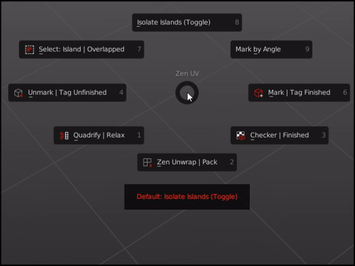

Pie Menu

Operators
Quadrify | Relax 
Default— Quadrify Islands. Straighten rectangular-shaped Islands.CTRL— Relax. Relax Selected Islands.
Zen Unwrap | Pack 
Default— Zen Unwrap. Unwrap by Marked edges. If you have selected edges or faces they will be Marked as Seams and/or Sharp Edges and Unwrapped after.ALT— Pack Islands. Pack Islands by chosen Pack Engine.
Checker | Finished 
Default— Checker Texture (Toggle). Add/Remove Checker Texture to/from the mesh.ALT— Display Stretch Map. Display an angle-based stretching map.CTRL— Display Finished. Display Finished Islands (Toggle).
Unmark | Tag Finished 
Default— Unmark. Unmark selected edges or face borders as Seams and/or Sharp edges.ALT— Unmark All. Remove all Seams and/or Sharp edges from the mesh.CTRL— Tag Unfinished. Tag selected Islands as Unfinished.
Mark | Tag Finished 
Default— Mark. Mark selected edges or face borders as Seams and/or Sharp edges.CTRL— Tag Finished. Tag selected Islands as Finished. Islands Taged as Finished won’t be unwrapped, recommended to Tag manually changed Islands (e.g. Quadrified Islands).
Select: Islands | Overlapped 
Default— Select Islands. Select Islands by selected edge/face of the Islands.ALT— Select Overlapped Islands.CTRL— Select Flipped Islands.SHIFT— Select Similar Islands.
Isolate Islands (Toggle)
Default— Isolate Islands (Toggle). Isolate Islands by selected edge/face of the Islands.
Mark by Angle
Default— Mark by Angle. Mark edges as Seams and/or Sharp edges by Angle.
Pie Menu Assist

Pie Menu Assist is special help window, which is located below the Pie Menu. There you can find, highlight and execute all the alternative ALT, CTRL, SHIFT Pie Menu commands.
Assist
If you want to disable Pie Menu Assist, you can do it here N-Panel -> Zen UV -> Preferences -> Display -> Display Pie Assist.
Default Shortcut
Zen UV Pie Menu  —
— Alt + U
Shortcut
If you don’t like default Pie Menu Shortcut, it can be changed here Edit -> Preferences -> Add-ons -> Zen UV -> Keymap. Don’t forget to change Shortcut for both contexts Mesh and UV Editor.